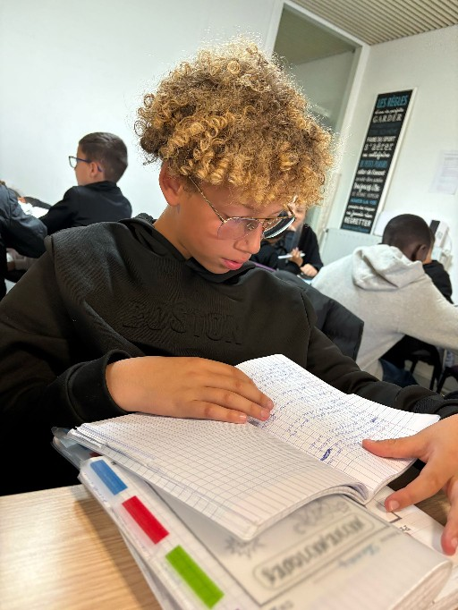
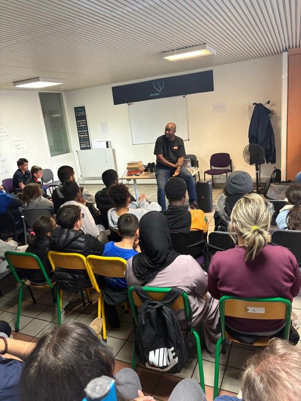
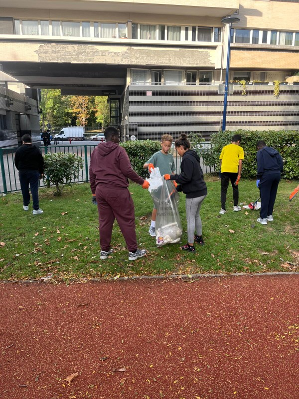
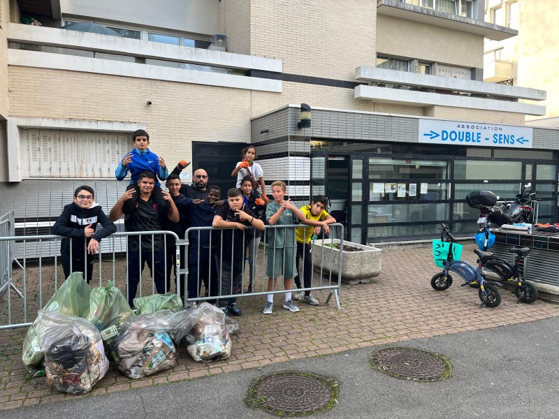
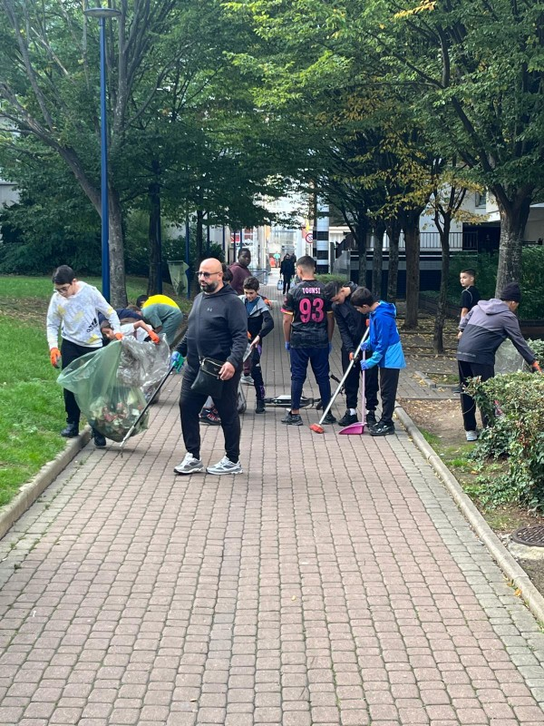
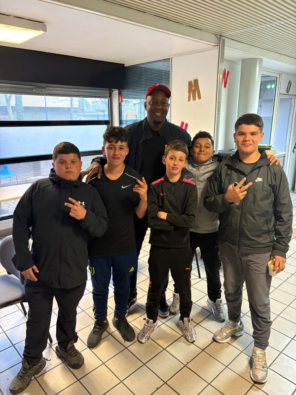
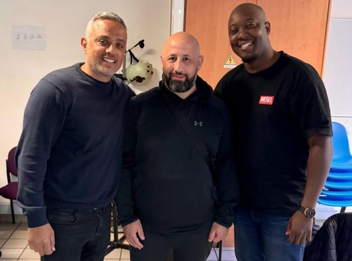

Accompagner, sensibiliser et faire grandir. Découvrez les différentes actions menées par Double Sens auprès des enfants et des familles.
Le soutien scolaire est au cœur de notre engagement. Nous accompagnons les enfants dans leurs devoirs, leurs révisions et leur organisation afin de favoriser leur réussite scolaire.
Notre objectif est de développer la confiance, l'autonomie et le plaisir d'apprendre dans un environnement bienveillant.


Double Sens sensibilise les jeunes au respect de leur environnement et à la préservation de leur cadre de vie.
Des opérations de nettoyage sont organisées régulièrement afin de développer l'esprit citoyen, la solidarité et le sens des responsabilités.



L'association organise des rencontres avec des intervenants inspirants afin d'échanger avec les jeunes sur des sujets importants : citoyenneté, réussite, engagement et parcours de vie.
Ces moments privilégiés permettent aux enfants d'élargir leurs horizons et de découvrir des expériences enrichissantes.

